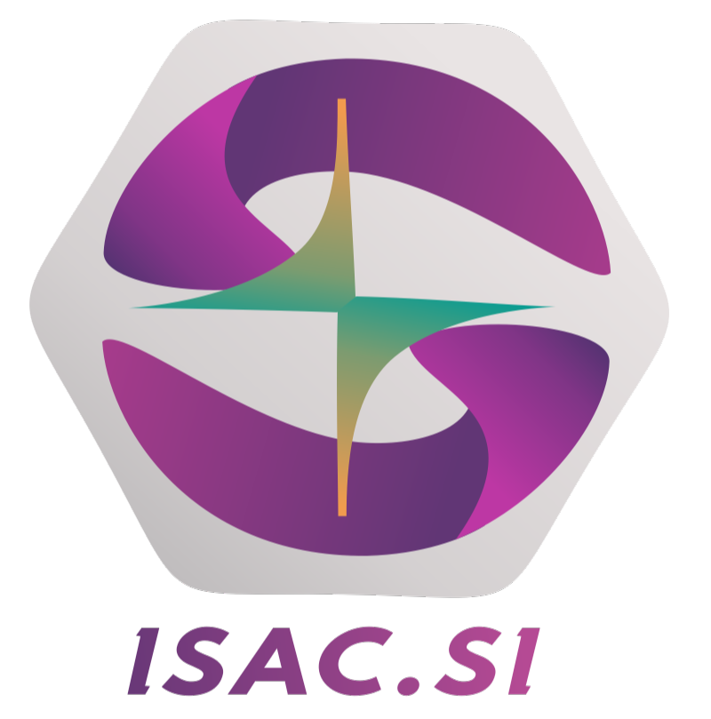

Modules connect to practical skill development, observable practice, and milestones learners can complete and demonstrate.
↗ MRDI PLATFORM · ISAC.SI

CAPABILITY PLATFORMStructured capability
learning with ISAC.SI.
MRDI’s structured learning platform follows capability growth inside active cohorts—from learning modules and practical assignments to tutor verification and project readiness.
COHORT-BASEDTUTOR-VERIFIEDLCI-ALIGNED
ACTIVE AT MRDICOHORT / 01
StudentsTRACK MODULES
AND MILESTONES
AND MILESTONES
TutorsREVIEW · VERIFY
· GUIDE
· GUIDE
ProjectsPROGRESS LINKED
TO REAL WORK
TO REAL WORK
DirectorsSEE COHORT HEALTH
AND OUTCOMES
AND OUTCOMES
01
ASSIGN MODULES
↗Structured learning blocks for workshop skills, systems, and project work.
02
EXECUTE AND UPLOAD
↗Practical tasks, submissions, and milestone evidence.
03
REVIEW AND IMPROVE
↗Tutors validate progress and coach the next step.
LEARNING THAT LEADS TO DOINGISAC.SI ↗
01 / WHY ISAC.SI
A learning platform
built for doing.
Traditional systems capture attendance, marks, and content completion. ISAC.SI follows practical learning as it moves through modules, workshop tasks, and real projects.
Tutors review milestones, identify learning gaps, and help students improve their execution and consistency.
↗Assignments and workshop execution connect with the projects students are building at MRDI.
↗Program teams can follow cohort progress, pending verification, and where support is needed.
↗02 / THE LEARNING JOURNEY
From the first module
to ready to build.
Each step keeps the learner, tutor, and training team connected to the same practical progress.
01
ONBOARDEnter the cohort.
Start with defined modules, training phases, and tutor visibility.
STUDENT VIEW02
COMPLETEWork through modules.
Build understanding through structured learning and practical assignments.
PRACTICE03
GET REVIEWEDImprove with guidance.
Tutors verify progress and step in where coaching can help.
TUTOR REVIEW04
BUILD READINESSConnect learning to work.
Make capability growth visible as learners prepare for projects and placements.
CAPABILITY RECORD03 / PLATFORM ROLES
One system.
Three working views.
Each person sees the information they need while staying connected to the same learner journey.
Student view
Know what to learn, what is pending, and which milestones are verified.
- Assigned modules and tasks
- Progress and pending work
- Clear next steps
Tutor view
Monitor consistency and respond early when learners need support.
- Milestone review
- Student-wise visibility
- Coaching and accountability
Director view
See cohort movement and where training support is needed.
- Cohort progress
- Training oversight
- Planning and review
ISAC.SI · OFFICIAL MEDIA
Structured learning
in action.
Watch MRDI’s ISAC.SI introduction video.
ISAC.SIPLATFORM INTRODUCTION
ISAC.SI promo video
MRDI ACCESS
Make practical learning
visible.
ISAC.SI is available as part of MRDI’s structured programs. Enquire about joining an active cohort.
Enquire with MRDI ↗SI